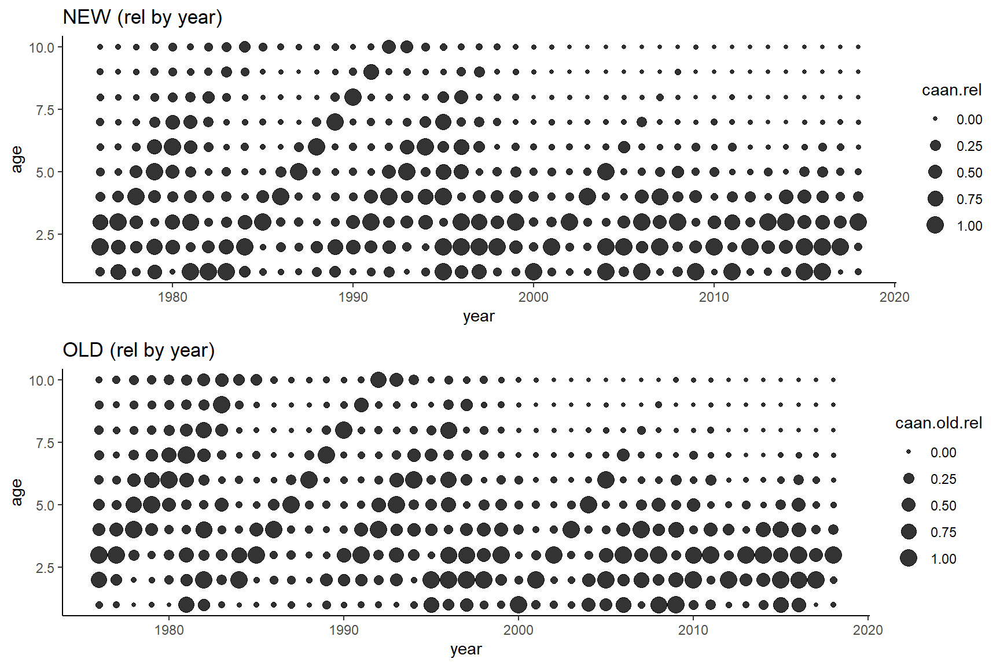

Catch-at-age: comparison
2021-03-17
1 SET-UP
1.1 settings
source('0.0_settings.R')1.2 load all data
# New caa
load(paste0(dir.rdat, "caa.Rdata"))
# Old caa and waa
year <- 2018
repo <- "https://github.com/iml-assess/mackerel_assessment/blob/master/"
caa.old <- read.ices(url(paste0(repo,'data/',year,'/cn.dat',"?raw=true")))
waa.old <- read.ices(url(paste0(repo,'data/',year,'/cw.dat',"?raw=true")))1.3 Bindind and scaling
caa.old <- reshape2::melt(as.matrix(caa.old),varnames=c('year','age'),value.name='caan.old')
waa.old <- reshape2::melt(as.matrix(waa.old),varnames=c('year','age'),value.name='waa.old')
caa.comp <- Reduce(function(x, y) merge(x, y, all.x=TRUE), list(caa, caa.old, waa.old))
caa.comp <- caa.comp[caa.comp$year %in% unique(caa.old$year),] # remove the recent years
caa.comp <- ddply(caa.comp,c('year'),mutate,caan.rel=caan/max(caan),caan.old.rel=caan.old/max(caan.old)) # compare proportions instead of absolutes2 CAA PLOTS
2.1 Side-wise absolute
grid.arrange(
ggplot(caa.comp,aes(x=year,y=age,size=caan))+geom_point(alpha=0.8)+ scale_size(range = c(1,8))+labs(title='NEW (absolute)'),
ggplot(caa.comp,aes(x=year,y=age,size=caan.old))+geom_point(alpha=0.8)+ scale_size(range = c(1,8))+labs(title='OLD (absolute)')
)
2.2 Side-wise relative
grid.arrange(
ggplot(caa.comp,aes(x=year,y=age,size=caan.rel))+geom_point(alpha=0.8)+ scale_size(range = c(1,5))+labs(title='NEW (rel by year)'),
ggplot(caa.comp,aes(x=year,y=age,size=caan.old.rel))+geom_point(alpha=0.8)+ scale_size(range = c(1,5))+labs(title='OLD (rel by year)')
)
2.3 Residual absolute
If the difference is more than 100% the dots/triangles are black
caa.comp$res <- with(caa.comp,(caan-caan.old)/caan.old)
caa.comp$big <- ifelse(abs(caa.comp$res)>100,TRUE,FALSE)
caa.comp$dir <- ifelse(caa.comp$res<0,'-',ifelse(caa.comp$res==0,'0','+'))
ggplot()+
geom_point(data=caa.comp[caa.comp$big==FALSE,],aes(x=year,y=age,col=abs(res),shape=dir),size=4)+
geom_point(data=caa.comp[caa.comp$big==TRUE,],aes(x=year,y=age,shape=dir),col='black',size=4)+
labs(title='(NEW-OLD)/OLD')+
scale_color_viridis_c(direction = -1)
## Warning: Removed 15 rows containing missing values (geom_point).
## Warning: Removed 15 rows containing missing values (geom_point).
2.4 Residual relative
caa.comp$res <- with(caa.comp,caan.rel-caan.old.rel)
caa.comp$col <- ifelse(caa.comp$res<0,'-',ifelse(caa.comp$res==0,'0','+'))
ggplot(caa.comp,aes(x=year,y=age,size=abs(res),col=col))+
geom_point(alpha=0.8)+
scale_color_manual(values=c('darkred','darkgreen','black'))+
labs(title='NEW (rel) - OLD (rel)')
2.5 Correlation
corr <- ddply(caa.comp[!is.na(caa.comp$caan.rel) & !is.na(caa.comp$caan.old.rel),],c('age'),summarise,corr=cor(caan.rel,caan.old.rel))
ggplot(caa.comp,aes(x=caan.rel,y=caan.old.rel))+
geom_point()+
geom_text(aes(label=year),size=2,hjust=0,vjust=0)+
geom_text(data=corr,aes(x=-Inf,y=Inf,label=round(corr,2)),vjust=1,hjust=0,col='blue')+
geom_abline(slope=1,intercept=0)+
facet_wrap(~age,scale='free')
3 WAA PLOTS
3.1 side-wise
grid.arrange(
ggplot(caa.comp,aes(x=year,y=waa,group=age))+geom_line(aes(color=age),size=1)+scale_color_viridis()+labs(title='NEW'),
ggplot(caa.comp,aes(x=year,y=waa.old,group=age))+geom_line(aes(color=age),size=1)+scale_color_viridis()+labs(title='OLD')
)
## Warning: Removed 12 row(s) containing missing values (geom_path).
3.2 side-wise by age
df <- reshape2::melt(caa.comp[,c('year','age','waa','waa.old')],id=c('year','age'))
ggplot(df,aes(x=year,y=value,group=variable,col=variable))+
geom_line(size=1,alpha=0.6)+
facet_wrap(~age,scale='free')+
scale_color_manual(values=c('red','black'))
## Warning: Removed 6 row(s) containing missing values (geom_path).
3.3 Correlation
corr <- ddply(caa.comp[!is.na(caa.comp$waa.old) & !is.na(caa.comp$waa),],c('age'),summarise,corr=cor(waa,waa.old))
ggplot(caa.comp,aes(x=waa,y=waa.old))+
geom_point()+
geom_text(aes(label=year),size=2,hjust=0,vjust=0)+
geom_text(data=corr,aes(x=-Inf,y=Inf,label=round(corr,2)),vjust=1,hjust=0,col='blue')+
geom_abline(slope=1,intercept=0)+
facet_wrap(~age,scale='free')
## Warning: Removed 16 rows containing missing values (geom_point).
## Warning: Removed 16 rows containing missing values (geom_text).